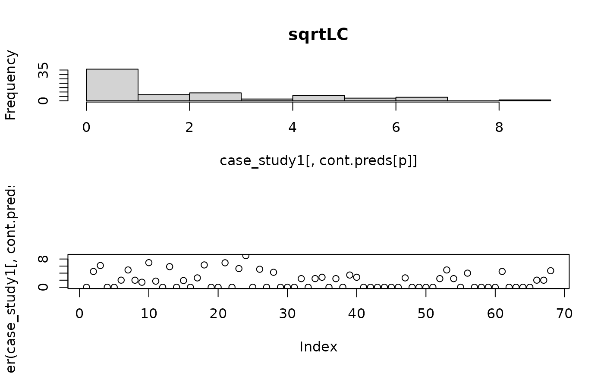
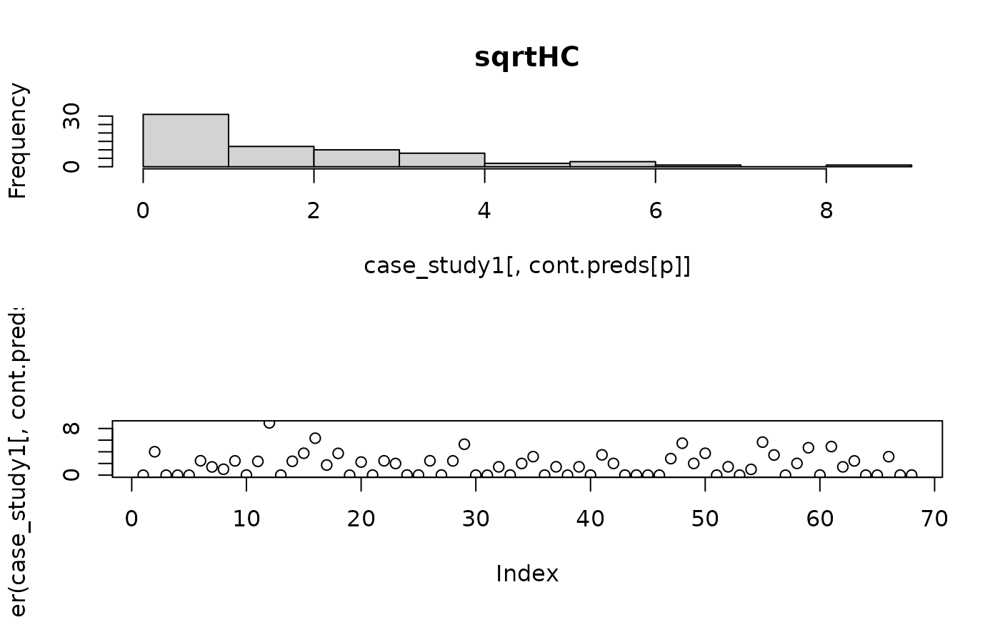
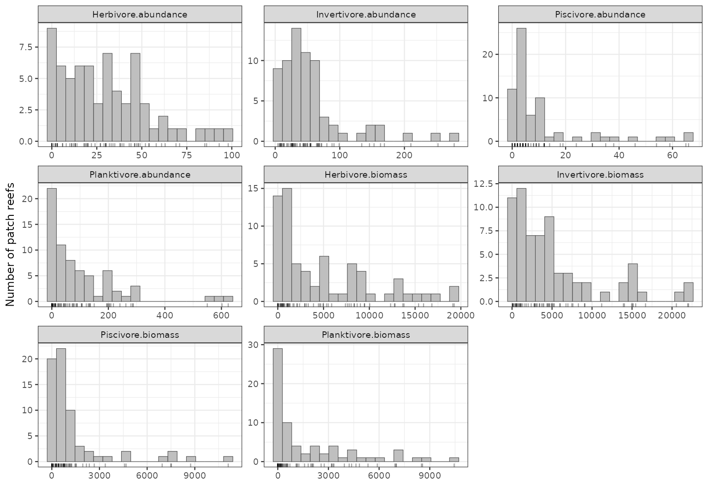
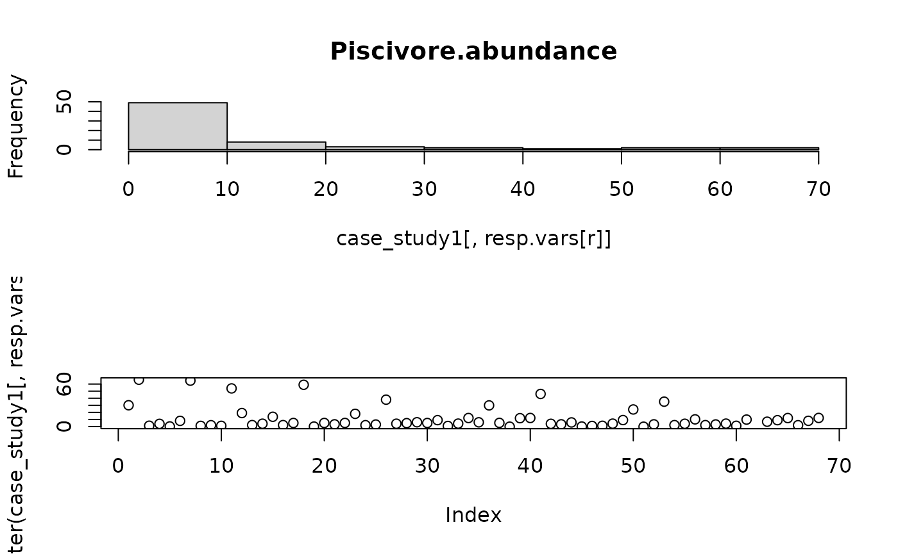
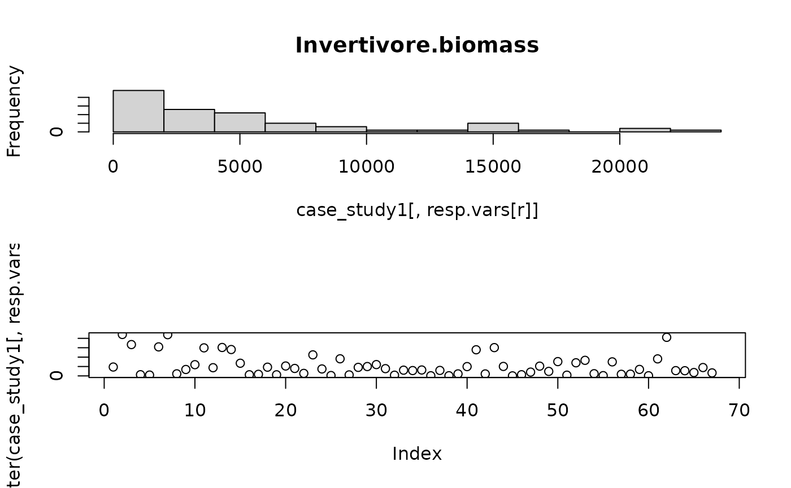
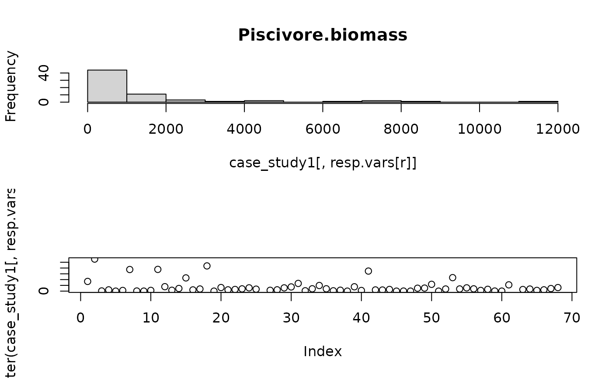
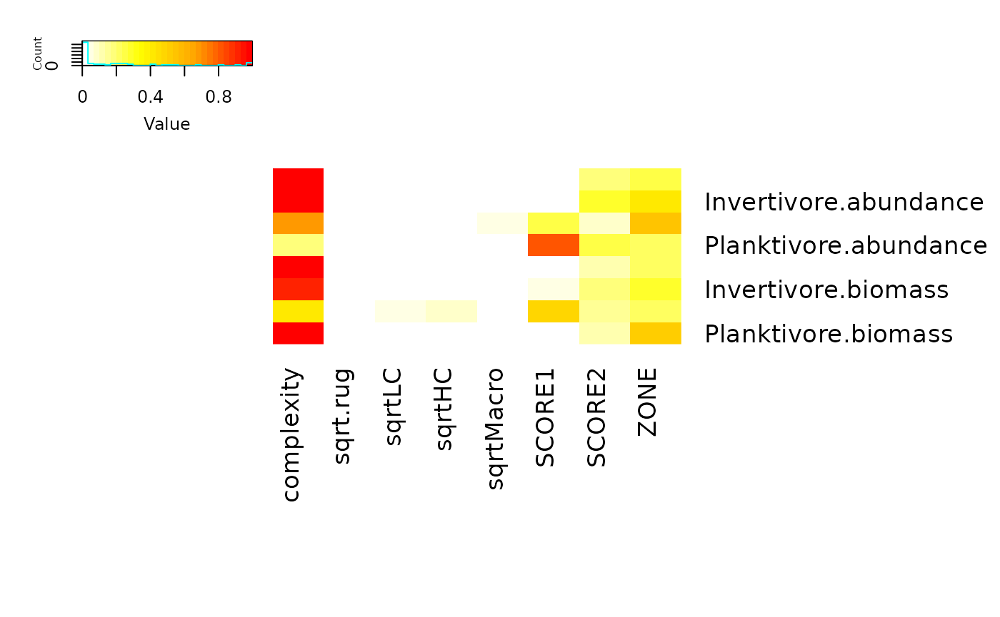
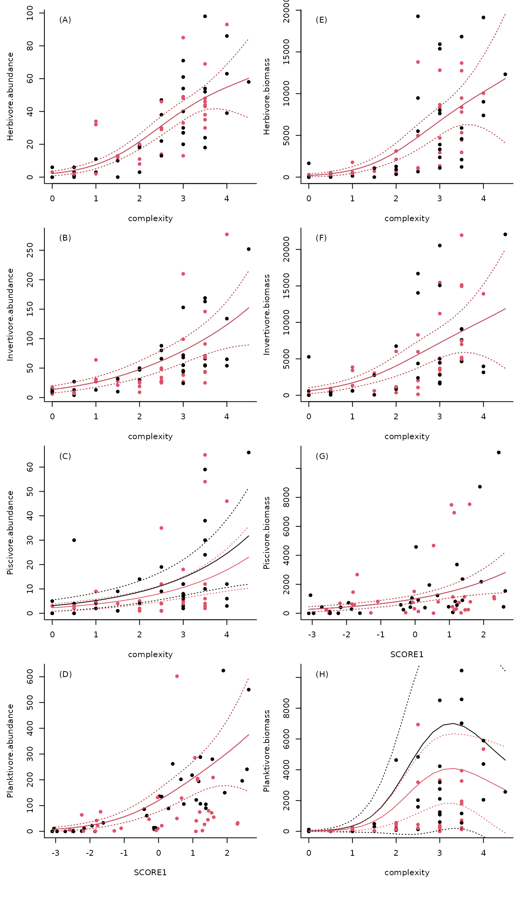

Overview
This case study examines how management zoning and habitat structure
influence abundance and biomass across multiple reef fish functional
groups. It uses full subsets generalised additive mixed models (GAMMs)
implemented in the FSSgam package to identify the most
important predictors across multiple response variables.
Background
Coral reef fish are highly diverse assemblages that provide important ecosystem services for millions of people (Pratchett et al. 2014). These services are however threatened by overfishing (Newton et al. 2007; MacNeil et al. 2015) and a loss of habitat, in particular corals (Wilson et al. 2006) and the structure they provide (Rogers et al. 2014). No-take reserves (NTR) promote higher abundance and biomass of fish (Russ 2002; McClanahan et al. 2009) and conserve ecosystem function (Graham et al. 2011). It is clear that NTR cannot prevent large scale disturbances, such as heat stress that cause extensive coral loss and decline in fish (Jones et al. 2004; Graham et al. 2008), however a reduction in local pressures in NTR may facilitate greater resilience of coral reefs (Hughes et al. 2010).
By examining patch reefs of differing habitat quality inside and outside of NTR within the Ningaloo marine park, Wilson et al. (2012) explored how habitat degradation and fishing influenced the abundance and biomass of fish from different functional groups. Explanatory variables in the original analyses were summarised using the scores from the two axes of a principal components analysis (PCA), making it was impossible to tease apart the relative importance of variables that were correlated along the axis. The revised analyses here based on a full subsets multiple regression approach allows the influence of habitat variables to be assessed independently.
Methods
Benthic and fish communities on patch reefs within fished (n=35) and NTR (n=33) of the Ningaloo lagoon were surveyed to investigate the influence of habitat and fishing on coral reef fish. On each patch the seascape level of reef structure (complexity) was assessed using a six point scale, where 0 represents no vertical relief and 5 represents highly complex reefs with small overhangs and caves (Polunin & Roberts 1993). Finer scale physical reef structure (rugosity) was measured as the linear distance covered by a 3m length of chain fitted to the reef contour (Risk 1972). Benthic cover was quantified along a 5m line intercept transect using the categories: high complex corals such as Branching morphologies (HC), low complexity corals such as massive and encrusting morphologies (LC), and macroalgae (Macro).
Abundance and size of adult fish was estimated by a diver using a point count method. Large mobile fish were initially counted from the perimeter of the patch, after which the entire patch was surveyed for smaller site attached species. Fish were placed into broad functional groups based on their diets and biomass calculated from length weight relationships (Froese & Pauly 2011).
Data analysis
A generalised additive model with full subsets analyses was used to determine if fishing, habitat or interactions between these variables best explained variance in abundance and biomass of functional fish groups.
Data preparation
In the original analysis PCA was used to summarise habitat information and scores from principal components 1 and 2 were included in the full subsets analysis. Principal component 1 was positively correlated with complexity and rugosity, but negatively correlated with percent macroalgal cover, while principal component 2 was positively correlated with HC, but negatively correlated with LC. In the revised analysis scores from both principal components (Score1 and Score2) were again included as explanatory variables, along with percent cover estimates from line intercept transects (HC, LC, Macro), complexity and rugosity measures. Zone (fished or NTR) was included as an assessment of fishing pressure. The motivation for including the original PCA scores in the revised analysis was that this should provide a means of comparing if the raw habitat predictors have a stronger relationship with the fish abundance and biomass variables than the PCA aggregate.
data("case_study1")Some transformations were applied to ensure the predictors were relatively evenly distribution without their range. This is important to obtain stable results from FSSgam.
Outlier handling
FFSgam can also be very sensitive to outliers. In this case these were a small number of very large schools of fish, that would be unlikely to be closely linked to the habitat variables in any case.
case_study1$Piscivore.abundance[case_study1$Piscivore.abundance > 150] <- NA
case_study1$Piscivore.biomass[case_study1$Piscivore.biomass > 40000] <- NA
case_study1$Invertivore.biomass[case_study1$Invertivore.biomass > 40000] <- NAPredictor specification
The categorical predictors and continuous predictors are passed to FSSgam via two separate vectors:
cat.preds <- "ZONE"
null.vars <- c("depth", "site", "SQRTSA")
cont.preds <- c(
"complexity", "sqrt.rug", "sqrtLC", "sqrtHC",
"sqrtMacro", "SCORE1", "SCORE2"
)It is useful to have a look at the distribution of the continuous predictors to ensure they are well distributed (following the transformation above).
for(p in 1:length(cont.preds)){
par(mfrow=c(2,1))
hist(case_study1[,cont.preds[p]],main=cont.preds[p])
plot(jitter(case_study1[,cont.preds[p]]))
}





Full subsets GAMM analysis
Both abundance and biomass data were modelled using a tweedie distribution, passed to FFSgam via a list.
resp.vars.fams <- list(
Herbivore.abundance = tw(),
Invertivore.abundance = tw(),
Piscivore.abundance = tw(),
Planktivore.abundance = tw(),
Herbivore.biomass = tw(),
Invertivore.biomass = tw(),
Piscivore.biomass = tw(),
Planktivore.biomass = tw()
)
resp.vars <- names(resp.vars.fams)It is always a good idea to look at the response variables, and make sure they suit the distribution.
for(r in 1:length(resp.vars)){
par(mfrow=c(2,1))
hist(case_study1[,resp.vars[r]],main=resp.vars[r])
plot(jitter(case_study1[,resp.vars[r]]))
}






 The models are then implemented via a call to gam (mgcv) with the random
effect of site included using the bs=’re’ specification. Smoothers to
both square-route surface area of the patch reef as well as depth were
included in all models (and as part of the null model) via the
null.terms argument of the full subsets gam function.
The models are then implemented via a call to gam (mgcv) with the random
effect of site included using the bs=’re’ specification. Smoothers to
both square-route surface area of the patch reef as well as depth were
included in all models (and as part of the null model) via the
null.terms argument of the full subsets gam function.
Given the complexity of the null model, the maximum number of additional predictors were limited to only an additional two terms (max.predictors=2) and k was limited to 3 to enforce strictly monotonic relationships.
Variable importance
all.var.imp <- do.call(rbind, var.imp)
heatmap.2(
all.var.imp,
dendrogram = "none",
Rowv = FALSE,
Colv = FALSE,
col = colorRampPalette(c("white", "yellow", "orange", "red"))(30),
trace = "none",
margins = c(12, 14),
key.title = ""
)
Top model table
all.models <- imap_dfr(
out.all,
~ .x %>% mutate(response = .y)
)
top.models <- all.models %>%
group_by(response) %>%
mutate(delta_AICc = AICc - min(AICc, na.rm = TRUE)) %>%
filter(delta_AICc <= 2) %>%
arrange(response, AICc) %>%
ungroup() |>
select(
response,
modname,
edf,
AICc,
delta_AICc,
wi.AICc)
knitr::kable(
top.models,
digits = 3,
caption = "Top FSSgam models within ΔAICc ≤ 2, ordered best to worst within each response"
)| response | modname | edf | AICc | delta_AICc | wi.AICc |
|---|---|---|---|---|---|
| Herbivore.abundance | complexity | 6.22 | 517.577 | 0.000 | 0.545 |
| Herbivore.biomass | complexity | 6.20 | 1193.357 | 0.000 | 0.648 |
| Invertivore.abundance | complexity | 8.58 | 609.964 | 0.000 | 0.318 |
| Invertivore.abundance | complexity+ZONE | 9.04 | 610.091 | 0.127 | 0.298 |
| Invertivore.abundance | complexity+SCORE2 | 9.35 | 610.185 | 0.221 | 0.284 |
| Invertivore.biomass | complexity | 6.42 | 1236.194 | 0.000 | 0.490 |
| Piscivore.abundance | complexity+ZONE | 6.01 | 457.410 | 0.000 | 0.241 |
| Piscivore.abundance | complexity | 5.64 | 457.424 | 0.014 | 0.239 |
| Piscivore.abundance | complexity.by.ZONE+ZONE | 7.00 | 458.609 | 1.199 | 0.132 |
| Piscivore.abundance | SCORE1.by.ZONE+ZONE | 7.86 | 458.616 | 1.206 | 0.132 |
| Piscivore.biomass | SCORE1 | 5.05 | 1023.292 | 0.000 | 0.290 |
| Piscivore.biomass | complexity | 5.00 | 1023.699 | 0.407 | 0.236 |
| Planktivore.abundance | SCORE1 | 6.72 | 686.784 | 0.000 | 0.453 |
| Planktivore.biomass | complexity+ZONE | 9.65 | 1011.661 | 0.000 | 0.471 |
| Planktivore.biomass | complexity | 9.31 | 1012.086 | 0.425 | 0.381 |
Predictor correlations
It can also be a good idea to check your predictor correlations.
knitr::kable(
model.set$predictor.correlations,
digits = 2,
caption = "Predictor correlations"
)| complexity | sqrt.rug | sqrtLC | sqrtHC | sqrtMacro | SCORE1 | SCORE2 | ZONE | |
|---|---|---|---|---|---|---|---|---|
| complexity | 1.00 | 0.75 | 0.51 | 0.32 | -0.62 | 0.89 | -0.12 | 0.01 |
| sqrt.rug | 0.75 | 1.00 | 0.33 | 0.40 | -0.58 | 0.85 | 0.10 | 0.09 |
| sqrtLC | 0.51 | 0.33 | 1.00 | -0.07 | -0.37 | 0.57 | -0.66 | 0.14 |
| sqrtHC | 0.32 | 0.40 | -0.07 | 1.00 | -0.48 | 0.48 | 0.73 | 0.01 |
| sqrtMacro | -0.62 | -0.58 | -0.37 | -0.48 | 1.00 | -0.82 | -0.15 | 0.03 |
| SCORE1 | 0.89 | 0.85 | 0.57 | 0.48 | -0.82 | 1.00 | 0.00 | 0.07 |
| SCORE2 | -0.12 | 0.10 | -0.66 | 0.73 | -0.15 | 0.00 | 1.00 | 0.10 |
| ZONE | 0.01 | 0.09 | 0.14 | 0.01 | 0.03 | 0.07 | 0.10 | 1.00 |
Pretty plots
case_study1 <- case_study1 |>
mutate(ZONE=factor(ZONE))
zones=levels(case_study1$ZONE)
par(mfcol=c(4,2),mar=c(4,4,0.5,0.5),oma=c(2,0.5,0.5,0.5),bty="l")
for(r in 1:length(resp.vars)){
tab.r<-out.all[[resp.vars[r]]] |>
arrange(desc(wi.AICc))
top.mods.r<-tab.r[1,]
mod.r.m<-as.character(top.mods.r[1,"modname"])
mod.m<-fss.all[[resp.vars[r]]]$success.models[[mod.r.m]]
mod.vars<-unique(unlist(strsplit(unlist(strsplit(mod.r.m,split="+",fixed=T)),
split=".by.")))
# which continuous predictor is the variable included?
plot.var<-as.character(na.omit(mod.vars[match(cont.preds,mod.vars)]))
# plot that variables, with symbol colours for zone
plot(case_study1[,plot.var],case_study1[,resp.vars[r]],pch=16,
ylab=resp.vars[r],xlab=plot.var,col=case_study1$ZONE)
legend("topleft",legend=paste("(",LETTERS[r],")",sep=""),
bty="n")
range.v<-range(case_study1[,plot.var])
seq.v<-seq(range.v[1],range.v[2],length=20)
newdat.list<-list(seq.v,# across the range of the included variable
mean(use.dat$depth), # for a median depth
mean(use.dat$SQRTSA),# for a median SQRTSA
"MANGROVE", # pick the first site, except don't predict on
# this by setting terms=c(plot.var,"ZONE")
zones) # for each zone
names(newdat.list)<-c(plot.var,"depth","SQRTSA","site","ZONE")
pred.vals<-predict(mod.m,newdata=expand.grid(newdat.list),
type="response",se=T,exclude=c("site","SQRTSA","depth"))
for(z in 1:length(zones)){
zone.index<-which(expand.grid(newdat.list)$ZONE==zones[z])
lines(seq.v,pred.vals$fit[zone.index],col=z)
lines(seq.v,pred.vals$fit[zone.index]+pred.vals$se[zone.index]*1.96,lty=3,col=z)
lines(seq.v,pred.vals$fit[zone.index]-pred.vals$se[zone.index]*1.96,lty=3,col=z)}
}
legend("bottom",legend= zones,bty="n",ncol=2,col=c(1,2),pch=c(16,16),
inset=-0.61,xpd=NA,cex=.8)
Results and discussion
Across functional feeding groups, reef structural complexity consistently emerged as a dominant predictor of both abundance and biomass. Management zoning effects were comparatively weaker, although some responses showed interactions between habitat structure and zoning.
This example demonstrates how full subsets GAMMs can be used to synthesise drivers across multiple response variables in ecological datasets.